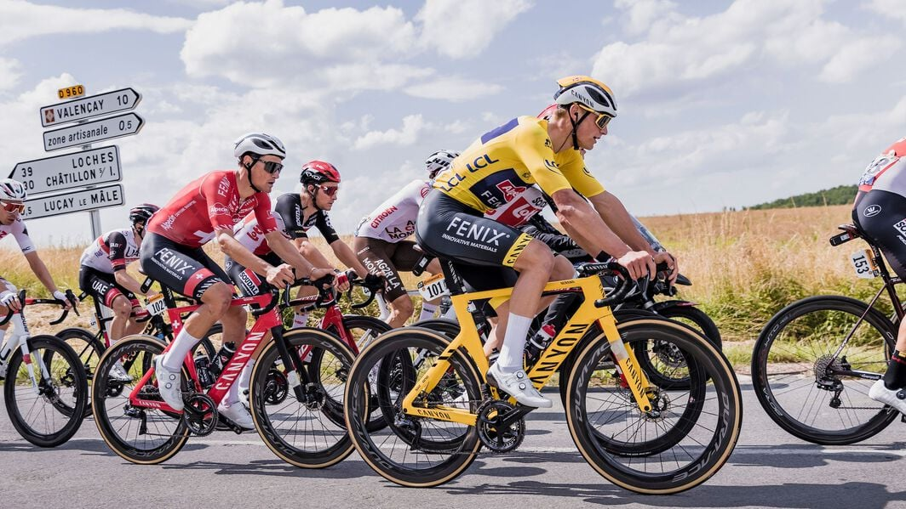

🏆 Classifiche Ufficiali – Giro d’Italia 2025
Classifica Generale (Maglia Rosa)
- Isaac Del Toro (UAE Team Emirates) – 55h 54' 05"
- Simon Yates (Team Visma | Lease a Bike) – +1'20"
- Juan Ayuso (UAE Team Emirates) – +1'26"
- Richard Carapaz (EF Education-EasyPost) – +2'07"
- Derek Gee (Israel-Premier Tech) – +2'54"
Classifica a Punti (Maglia Ciclamino)
- Mads Pedersen (Lidl-Trek) – 240 pt
- Olav Kooij (Team Visma | Lease a Bike) – 135 pt
- Casper van Uden (Team Picnic PostNL) – 88 pt
Classifica Scalatori (Maglia Azzurra)
- Lorenzo Fortunato (XDS Astana Team) – 197 pt
- Juan Ayuso (UAE Team Emirates) – 54 pt
- Manuele Tarozzi (VF Group-Bardiani CSF-Faizanè) – 50 pt
Classifica Giovani (Maglia Bianca)
- Isaac Del Toro (UAE Team Emirates)
- Juan Ayuso (UAE Team Emirates)
- Antonio Tiberi (Bahrain Victorious)